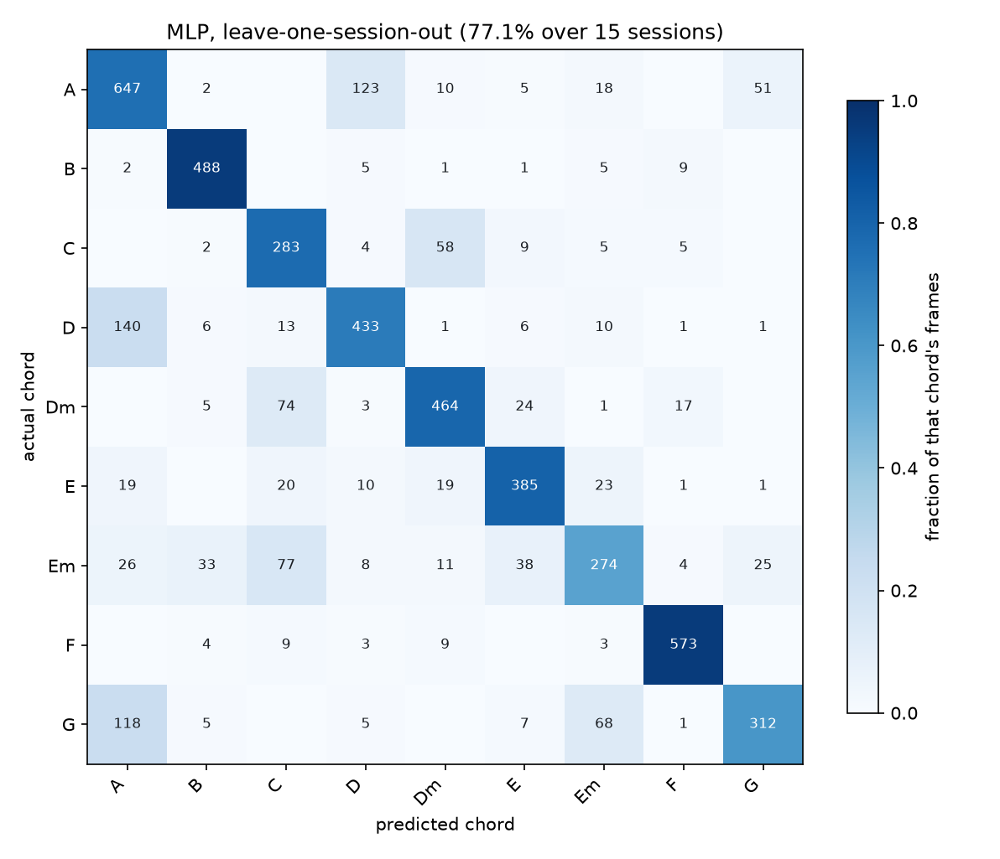
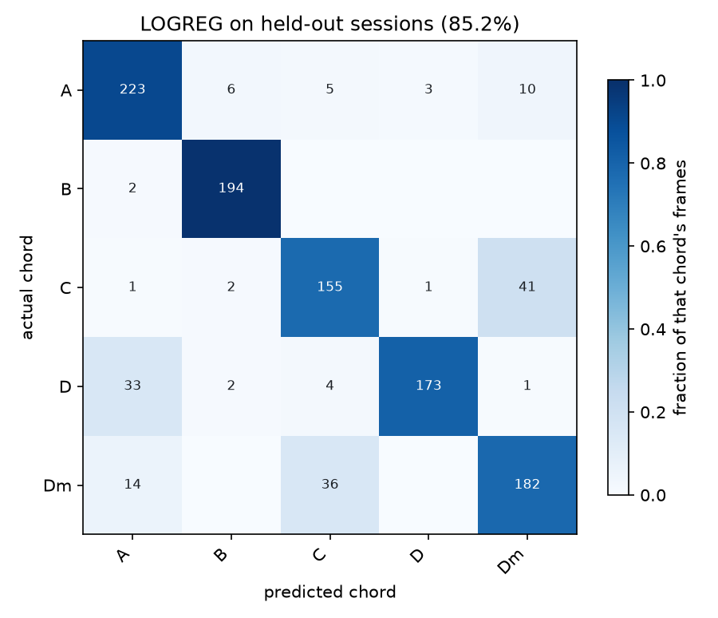

Model trained, demo built. One targeted recording round left, then write-up and rehearsal.
One targeted round left. D, Dm and E are still climbing on the per-chord curve — everything else is flat. Full frame budget in the first checklist item below and in RECORDING_TRACKER.md.
Ordered by what breaks the demo if skipped. Ticks are saved in this browser.
| Model | Accuracy | sd |
|---|---|---|
| MLP (128, 64) | 74.6% | 10.1 |
| SVM (RBF, C=10) | 73.4% | 10.1 |
Worst held-out session 56.0%, best 90.4%. The spread is the honest measure of how much the setup matters.
| Scheme | Session | Person |
|---|---|---|
| all 14 | 63.0% | 51.7% |
| drop 4 | 71.6% | 71.8% |
| + drop Am | 74.6% | 70.8% |
| merge pairs | 72.7% | 54.7% |
B scored 6.1% on a new person under the merge and 96.9% once Bm was dropped. Excluding Am took E from 0.540 to 0.834 f1. Cross-person columns use different class counts, so they are not directly comparable.
| Pair | Errors |
|---|---|
| A ↔ D | 296 |
| C ↔ Dm | 289 |
| Dm ↔ Em | 134 |
| Em ↔ G | 119 |
Shapes that differ only by which strings they sit on. Position-blind features cannot separate them — a design limitation, not a bug. The same pairs dominate on the unseen person, so the model fails consistently.
Generated by train.py into reports/. If these show as broken, run python train.py.


train.py --holdout-sessions 1189027a e587eb5b.“How do you know it isn't memorising?” Frames from one sitting are near-duplicates, so a random split would test on data already seen. Every number uses leave-one-session-out: train on 15 sittings, test on the 16th. A random split would have read ~20–30 points higher and been fiction.
“Why not a CNN on the images?” With ~9,500 images from two people, a pixel model learns the room, the shirt and the lighting. Landmarks throw all of that away and keep geometry. It also runs on a CPU in real time and every feature can be named.
“Does it work for anyone else?” Yes, and it is measured: 70.8% on a person held out of training entirely, against 20% chance. Close to the 74.6% on unseen sittings of my own hands, which is the surprising part — the model does not depend much on whose hands it sees.
“Why are four chords missing?” They are recorded, not missing. Bm/Cm and Fm/Gm are the same shape at different frets; Am and E are the same shape one string apart. The features deliberately ignore position, so these collide by construction. Excluding them raised accuracy from 63.0% to 74.6% and took E from 0.540 to 0.834 f1.
“What is the biggest weakness?” A↔D and C↔Dm, for one reason: the features cannot tell which strings the hand is on. Em is weakest at 0.386 f1. Fixing it means detecting the neck itself and locating the hand against it, which is a different project.
“What was the biggest thing you learned?” That recording variety beats recording volume. At equal session count, sessions with varied grip beat sessions held still by +7.8 points, and 4,023 images were doing the work of about 1,900.